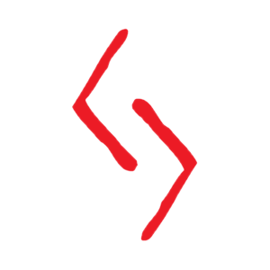

Биография
Кратос родился в греческом городе-государстве Спарта , полубог, сын Зевса и смертной женщины по имени Каллисто , хотя большую часть своей жизни он не знал, кем был его отец. Возмущенная Зевсом за то, что он стал отцом еще одного внебрачного ребенка, Гера приказала казнить Кратоса в день его рождения, но Король богов сжалился над ребенком и отказался, оставив его в Спарте на воспитание Каллисто.
Как и вся спартанская молодежь, за Кратосом наблюдали и готовили к бою спартанские власти; те, кого сочтут пригодными, должны были остаться и пройти обучение в качестве спартанских воинов, в то время как тех, кого сочли непригодными, отправили в горы (вероятно, на гору Тайгет), чтобы они сами позаботились. Уже в молодом возрасте дерзкий и агрессивный Кратос тренировался вместе со своим младшим братом Деймосом , поскольку они мечтали присоединиться к спартанской армии, когда вырастут. Примерно в это же время Зевс начал слышать пророчества, предсказывающие его кончину от рук одного из его сыновей, «отмеченного воина». Надеясь обойти цикл отцеубийств, пока не стало слишком поздно, Зевс послал Ареса и Афинувыследить и избавиться от мальчика, который однажды восстанет против него. Арес, заметив странные родимые пятна Деймоса, решил вторгнуться в Спарту с армией кентавров и отвезти его к Танатосу , богу смерти. Кратос пытался спасти своего брата, но Арес ударил его о груду дров, оставив на его правом глазу постоянный шрам.
Оскорбленный неповиновением смертного, Арес приготовился убить юного спартанца, но был остановлен Афиной. Богиня напомнила Аресу, что у них есть то, что они искали, и извинилась перед Кратосом, прежде чем исчезнуть в огне. Потеря брата оставила неизгладимый след в Кратосе, поскольку он поклялся никогда больше не колебаться. В честь своего брата Кратос сделал себе татуировку с точным изображением родинки Деймоса. Кратос позже забудет, что это Арес и Афина забрали у него его брата, и не осознают этого до смерти Ареса.
Вскоре после своего рождения Каллиопа заразилась чумой, в результате чего спартанские власти сочли ее слабой. Спартанский закон требовал, чтобы ее бросили в пропасть и оставили умирать. Решив спасти свою дочь, Кратос отправился в путешествие к Амброзии, услышав от старейшины о ее исключительных целительных способностях. Но без ведома Кратоса, Арес выбрал его своим чемпионом в пари богов, в соревновании, конечной целью которого является захват Амброзии; Победитель поставил бы статуи в их честь по всей Греции. Батальон спартанцев сопровождал Кратоса в его поисках, включая капитана Никоса . По пути он встретил целителя, который дал ему Пламя Аполлона .
Кратос в конце концов столкнулся с чемпионом Посейдона, Иродиусом , и убил его, когда спартанцы завоевали его армию и украли их корабль. Взбешенный Кратосом за то, что он стоил ему пари, Посейдон развязал несколько опасностей в море в надежде убить его, но потерпел неудачу. Позже Кратос столкнулся с чемпионом Артемиды, Потией , и убил ее, а ее армия также стала жертвой спартанцев, хотя Артемида не ответила. В страхе, что Кратос победит своего чемпиона, Алрика , короля варваров, Аид послал поток огня по небу. Хотя ему не удалось убить Кратоса, ему удалось убить многих людей Кратоса, включая капитана Никоса. Найдя Амброзию , Кратос столкнулся с Цереоном., чемпион Гелиоса, и убил его.
Алрик и его армия варваров сражались со спартанцами за Амброзию , так как отец Алрика был очень болен и нуждался в эликсире. После изнурительной битвы между двумя лидерами Кратос успешно захватил Амброзию ценой своих людей и вызвал армию Рочков, чтобы непрерывно пытать Алрика. Затем Кратос вернулся в Спарту и исцелил Каллиопу, получив звание «капитана» от короля Спарты .
В какой-то момент после того, как он стал капитаном, Кратос будет командовать молодым солдатом по имени Атрей, который сохранял надежду даже в самые мрачные времена. Когда настал день, когда Атрей отдал свою жизнь в битве, он сделал это без колебаний и спас многих других, заработав уважение Кратоса. Капитан отнес Атрея домой на солдатском щите и лично похоронил его в полном соответствии со спартанскими обычаями, признав его единственным спартанцем, у которого когда-либо появлялась улыбка даже в бою.

Как генерал Кратос выигрывал битвы с помощью жестокой, но эффективной тактики. Однако его гордость и жажда власти росли с каждой победой. Несмотря на мольбы Лисандры, Кратос поклялся продолжать свои кровавые завоевания «до тех пор, пока слава Спарты не станет известна всему миру», проводя время со своей семьей только тогда, когда он сможет вернуться в Спарту.
Кратос и его армия, наконец, встретили своего соперника, когда они столкнулись с безжалостными племенами варваров с Востока, возглавляемыми старым врагом Кратоса, Алриком. Обладая численным превосходством, спартанцы быстро оказались в проигрыше, а сам Кратос остался на милости Алрика, короля варваров , который стремился отомстить Кратосу за непреднамеренную смерть его отца. В отчаянии Кратос обратился к Аресу, богу войны, клятвенно обещая свою верность в обмен на победу. Арес принял предложение, убив всех варваров, включая Алрика, и отдал Кратосу Клинки Хаоса в знак своего служения.
Какое-то время Кратос лояльно служил Аресу, совершая набеги на деревни, убивая невинных и сея хаос от своего имени. Под влиянием Бога Войны Кратос стал совершенно безжалостным и постепенно утратил всякое подобие человечности, которое у него когда-то было. Однажды, во время рейда на деревню последователей Афины, Арес тайно перевез Лисандру и Каллиопу в ближайший храм. Игнорирование деревенского оракулаПредупреждения, Кратос вошел в храм и в приступе слепой ярости зарезал всех внутри, включая свою жену и ребенка (которые, по его мнению, все еще находились в Спарте). Арес оправдал это как средство разорвать оставшуюся привязанность Кратоса к миру смертных, тем самым превратив его в идеального воина. Пораженный ужасом и горем из-за того, что он сделал, Кратос оставил тела своей семьи, чтобы сжечь в храме, в конечном итоге отказавшись от своей верности Богу войны. Оракул проклял Кратоса, заставив его навсегда носить прах его мертвой семьи на своей коже.
С этого дня Кратос стал известен как Призрак Спарты ; его кожа теперь была «бледной, как луна» от пепла, покрывавшего его. Для других смертных он теперь был отмечен своей призрачно-белой кожей - знание о его прошлых действиях часто отталкивало их до такой степени, что они скорее умерли, чем позволили ему спасти свои жизни. Он стал известен как олицетворение жестокости и эгоизма. Слухи об этой метаморфозе распространятся даже за пределами Греции, поскольку норвежский бог и советник Одина , Мимир, который станет будущим союзником самого Кратоса, позже мгновенно узнает, кем был Кратос.
За нарушение клятвы Арес приказал Фуриям выследить Призрака Спарты и заставить его снова служить Богу Войны. Тем временем Кратос оказывается в заброшенной деревне Кирра, где он заперт в иллюзии своего дома в Спарте, а его кровная клятва подавляет воспоминания об убийстве своей жены и дочери. Хранитель клятвы Фурий, Оркос , появился перед ним и призвал его заглянуть за пределы иллюзии, используя ожерелье и кольцо Лисандры, чтобы разбить ее. Хотя Кратос не доверял ему, он следовал инструкциям Оркоса, чтобы найти Алетейю , Оракула в Дельфах . Ранее она была схвачена Поллуксом и Кастором , но Кратос убил их обоих и взялАмулет Уроборуса . Он поговорил с умирающим оракулом, который раскрыл план Ареса превратить Кратоса в воина, способного свергнуть Зевса, тем самым позволив Аресу стать новым королем Олимпа. Затем Кратос отправился обратно в Кирру, где он снова столкнулся с Оркосом. Хранитель клятвы показал, что он сын Ареса и Алекто, одной из трех Фурий.
Оркос объяснил Кратосу намерения Ареса. Как Зевс запретил богам вести войну друг с другом, Арес стремился вывести воина, способного уничтожить Зевса вместо него, чтобы Арес мог узурпировать его и управлять Олимпом для себя. Разочарованный полным отсутствием боевых навыков у Оркоса, Арес отрекся от сына. Вместо этого Оркос стал хранителем клятвы Фурий в попытке доставить удовольствие своей матери, Алекто. Арес увидел в Кратосе задатки воина, который ему нужен, чтобы свергнуть Зевса, и по этой причине он помог ему в тот день против варваров. Убийство его семьи должно было стать одним из трех «испытаний», которые свяжут Кратоса с волей Ареса: убийство врагов, убийство невинных людей и убийство собственной семьи. Оркос сделал свою мать ' Он стал хранителем клятвы и не допрашивал ее, пока Арес не обманом заставил Кратоса убить его семью. Вооружившись этими знаниями, Кратос отправился на Делос на корабле.
Оказавшись там, Кратос пересек гигантскую разрушенную статую Аполлона, где на него напали все три Фурии. В последовавшей конфронтации Кратосу удалось отрезать руку Мегеры, но Алекто использовала свою силу, чтобы схватить его. Оркос появился и освободил Кратоса, сопроводив его в другое место, а Алекто поклялся, что ему никогда не добиться успеха. После опасного путешествия Кратос использовал Амулет Уроборуса, чтобы полностью восстановить статую и получить Глаза Фонаря. Но после завершения Испытаний Архимеда он снова попал в засаду Фурий, которые берут его в плен и крадут Глаза и Амулет.
Две недели Фурии пытали Кратоса в Тюрьме Проклятых . Спартанец в конце концов сумел освободиться и преследовал Мегеру через тюрьму. Она и Тисифон попытались ввести его в заблуждение, создав иллюзию публичного дома. Когда он заснул с женщиной внутри, он заметил кольцо на ее пальце и понял, что это уловка. Он ответил, взявшись за Тисифон, но вмешалась Мегера и настояла на том, что Кратос принадлежит ей. Megaera выпустила насекомых в руки и рот Aegaeon, мутируя их в гибриды насекомое-титан. Кратос получил Амулет Уробороса, убив Мегэру и Гекатонхиров, только для Тисифона, чтобы создать иллюзию того, что он удостоен чести короля Спарты.. Кратос прогнал его и, продвигаясь дальше в тюрьму, обнаружил Писца Гекатонхиров , первого смертного, заключенного Фуриями. Писец показал, что Фурии изначально были справедливы в своих наказаниях и стали безжалостными только под влиянием Ареса.
Пробираясь в комнату Алекто, Кратос забрал Камень Клятвы у домашней птицы Тисифона, Даймона.. Войдя в комнату, Фурии создают еще одну иллюзию, на этот раз дома Кратоса в Спарте. Это его почти увлекло, потому что он снова увидел свою жену и дочь. Он был близок к тому, чтобы уснуть с образом Лисандры, но вскоре замечает кольцо на ее пальце, показывая, что это Алекто. Затем она пытается убедить Кратоса, что он может жить в этой иллюзии вечно, если он присоединится к Аресу; однако, заметив, что Глаза Истины висят у нее на бедре, он отказался, предпочитая правду жизни лжи. В ярости, Алекто отбрасывает иллюзию и угрожает казнить его, если он не будет служить Аресу. Кратос вырывается из ловушки для грязи и выхватывает Глаза у Алекто, которая отступила обратно в свое святилище, прежде чем она поняла, что они исчезли. Тисифон присоединился к Алекто, когда Кратос двинулся на оставшихся Фурий. Они создали иллюзию огромного водоворота,Используя Глаза, Кратос разрушил иллюзии Фурий и заставил Алекто вернуться в ее человеческую форму. По мере того, как он приближался к Королеве Ярости, Тисифон снова отправил Даймона, но Кратос просто использовал Глаза, чтобы уничтожить птицу. Он начал ударить Тисифон, меняя облик между королем и самим Кратосом, когда она принижала его. Когда он обвил руками ее шею, Тисифон превратился в Лисандру, заставив Кратоса ненадолго колебаться. Затем Тисифон превратился в деревенского оракула, сказав Кратосу, что его семьи не было случайно в ту ночь, когда он убил их, прежде чем Кратос сломал ей шею. Когда остался только Алекто, Кратос вытащил свои клинки. Королева Ярости холодно говорит ему, что правда только причинит ему боль, прежде чем он вонзит свои клинки ей в грудь. С ее последним вздохом
Когда все три Фурии были мертвы, Кратос вернулся в свой дом в Спарте, где Оркос поздравил его с победой. В то же время он также показал, что стал новым хранителем присяги, тем самым поддерживая связь Кратоса с Аресом. Он умолял Кратоса устроить ему достойную смерть, так как это освободит их обоих от Бога, на что Кратос первоначально отказался, заявив, что больше не должно проливаться невинной крови. Продолжающиеся мольбы Orkos'a в конечном итоге заставили Кратоса руку. Этим актом Кратос испытал первый из многих кошмаров, ранее замаскированных его связью с Аресом: это была цена, которую он должен был заплатить за нарушение своей клятвы. Он также открыл свой путь к искуплению через постоянное служение Олимпу. Кратос начал сжечь свой дом с трупом Оркоса внутри.